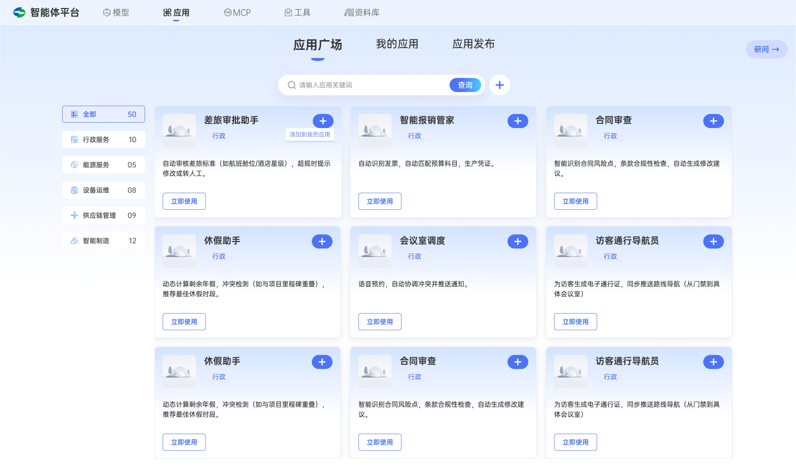
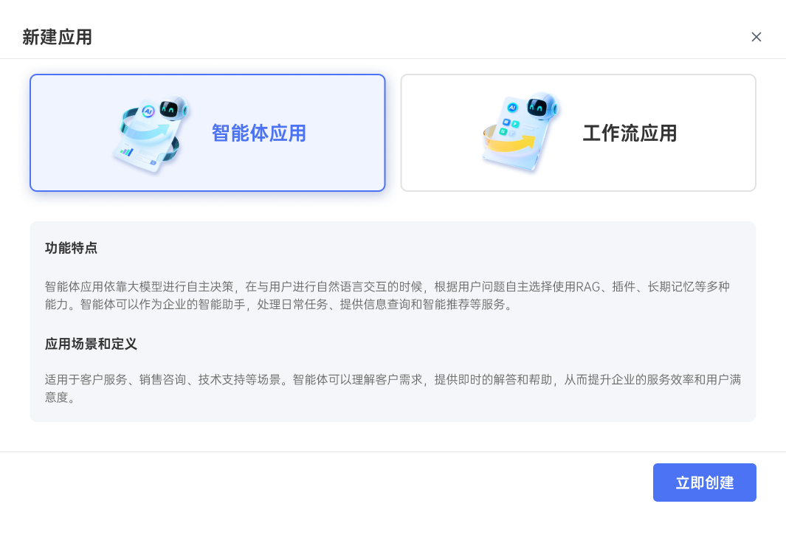
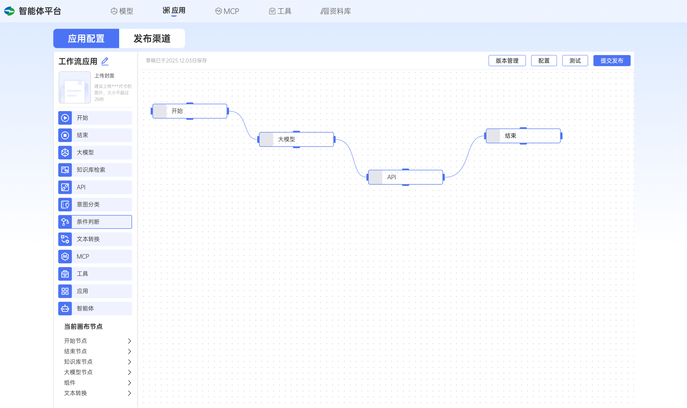
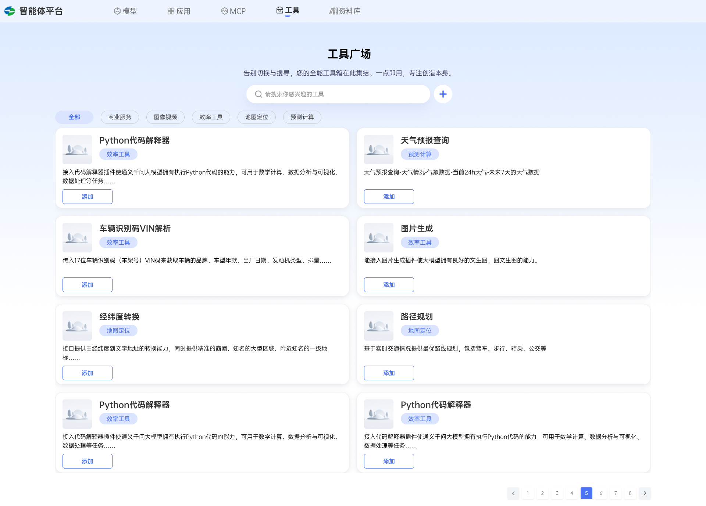
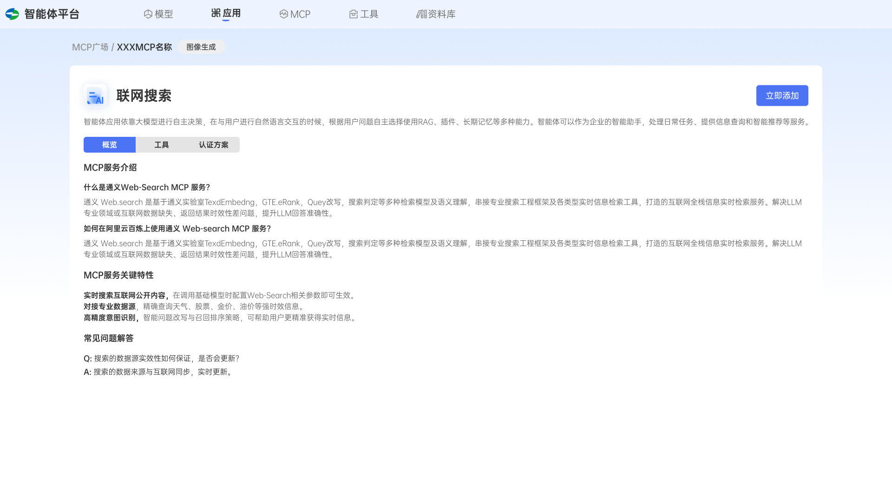
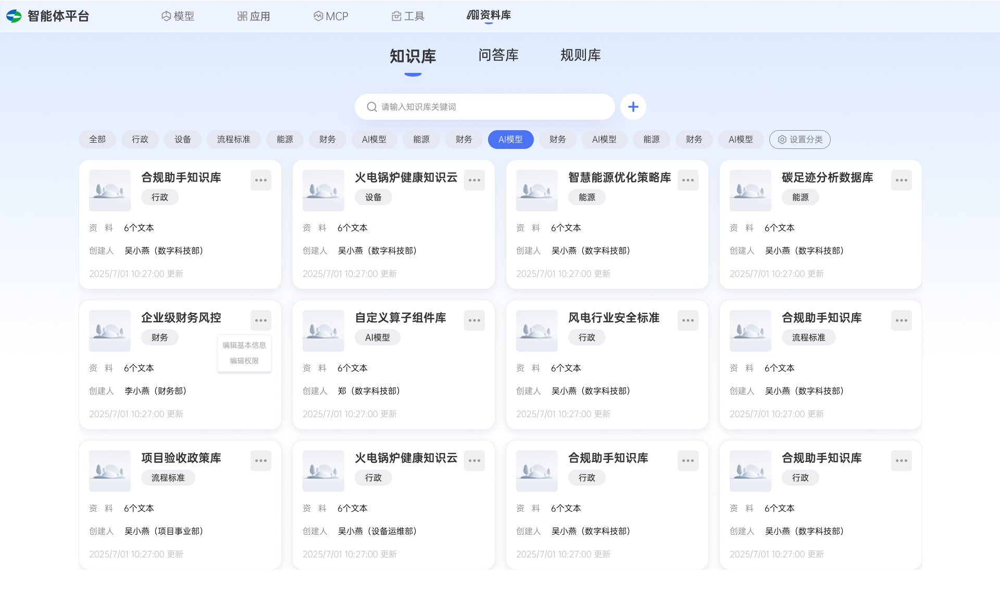
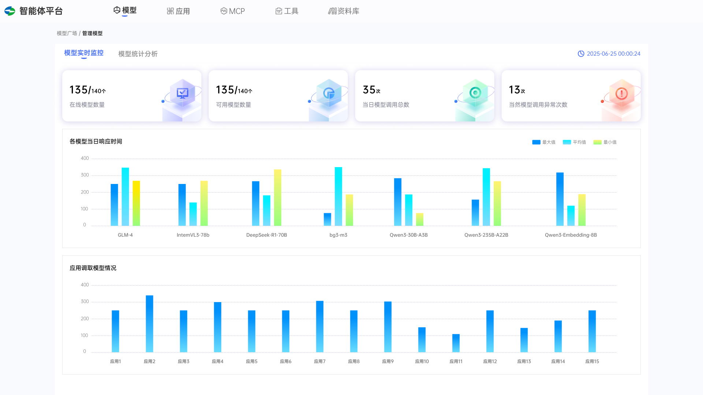

散落在不同系统里，用一次就要重新拼一次，沉淀不下来。
Enterprise Case · AI Platform
让企业里的每个人，都能自己建起一个 Agent。
面向上海电气研究院的企业级智能体平台，把模型、应用、MCP、工具与资料库，组织成一条从「创建 → 调试 → 发布 → 治理」的完整链路。
模型统一接入与监控
应用智能体 / 工作流
MCP标准协议接入
工具可复用能力库
资料库知识 · 问答 · 规则
The Challenge
人人都想用 AI，却没有一个地方能把 Agent 建起来、管起来。
模型散落、工具各自为政、知识难以复用，非技术员工更是无从下手。平台要在对标 Dify、Coze、阿里百炼等产品之后，为研究院沉淀一套属于自己的 Agent 生产与治理底座。
业务同事有场景、有数据，却卡在"不会搭"这一步。
非技术同事也能上手，管理员也能管得住。
My Role
产品定方向，我把它做成一套非技术同事也能上手的平台。
前期大量竞品调研
对标 Dify、Coze、阿里百炼等平台，梳理 Agent 平台的通用范式与交互模式。
中期全平台交互设计
负责模型、应用、MCP、工具、资料库五大模块的流程、状态与高保真界面。
后期高保真设计交付
完成整套高保真 UI 落地并交付研发，平台已面向研究院员工上线使用。
产品规划由团队确定。我作为平台唯一的交互设计师，基于产品规划与竞品调研，完成整个平台的交互与高保真设计交付，不把产品方向包装成个人单独定义。
Create
从一个应用广场开始，两种方式建 Agent。
员工在应用广场按部门（行政、能源、设备运维、供应链、智能制造）找到现成应用直接使用；要自建时，用「智能体应用」让模型自主决策，或用「工作流应用」把步骤编排清楚。


Build & Debug
把 Agent 的思考过程，摆成一张能看懂、能调的画布。
大模型、知识库检索、意图分类、条件判断、文本转换、MCP、工具等节点在画布上连成流程，非技术用户也能看懂一个 Agent 如何一步步得到结果，并在同一处测试、发布与做版本管理。

每个节点对应一种可复用能力，拖拽连线即可组装出一个 Agent。
Agent 的决策路径被可视化，便于调试，也便于交接给同事。
同一画布完成测试、版本管理与提交发布，不在多个后台之间跳。
Delivery Coverage
我负责的是整个平台的设计交付，不把每个模块都展开成长案例。
下面四个画面只证明交付覆盖面：能力如何进入平台、知识如何被配置、模型如何被监控。产品规划和治理方向由团队确定。




Outcome
一套已经面向研究院员工上线使用的 Agent 平台。
这是我第一次系统地理解企业 Agent 如何被创建、调试、发布与治理。作品集中不使用未经确认的效率或规模数字，这里呈现的是已经成立的设计事实与上线状态。
它证明的，是我能吃透一个平台级的复杂产品，把大量竞品调研转化为一套非技术同事也能上手的交互，并对整个平台的设计质量负责。